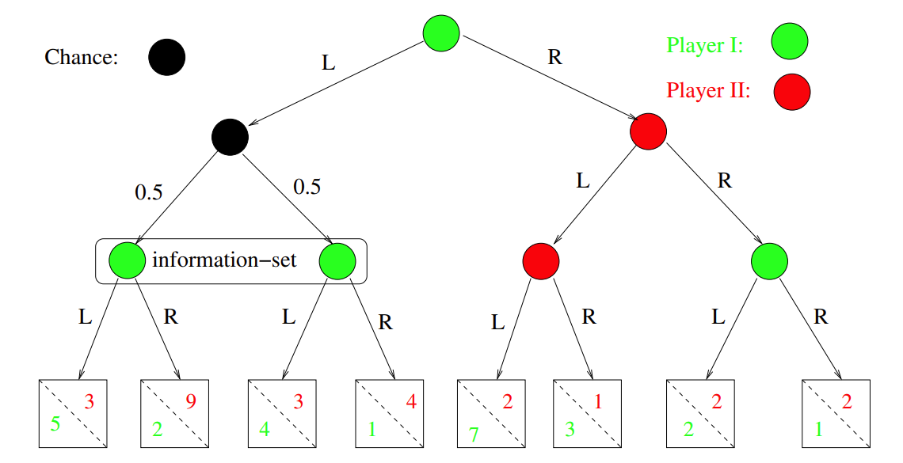
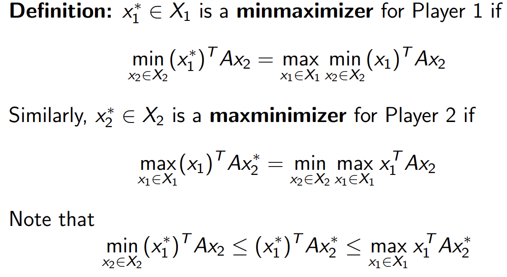

Dominant Strategy: No matter what other players do, it is the optimal strategy. For example in Prisoner's dilemma, defection is the dominant strategy.
Nash Equibria: A profile of stratefies for n players such that no player can benefit by unilaterally deviating from its strategy. E.g., in prisoner's dilemma (defect, defect) is a pure NE. In Rock-Paper-Scissors ((1/3, 1/3, 1/3), (1/3, 1/3, 1/3)) is a mixed NE.
Game types:
Chance and Information
Theorem about extensive game: Any finite n-person extensive game of perfect information has an equibrium in pure strategies.
Mechanism design
Applications
A finite strategic game consists of:
Mixed (Randomized) strategies:
Expected payoffs
Some notations
Best response: the best response zi of player i to other players' strategies, Ui ( x-i ; zi ) ≥ Ui ( x-i ; yi ). If every player employs best response, it is a NE. If every best response is a pure strategy, it is a pure NE.
Nash's theorem: Every finite n-person strategic game has a mixed Nash Equilibrium.
Brouwer fixed point theorem: Every continuous function f : D → D mapping a compact and convex, nonempty subset D ⊆ ℜm to iteslf has a "fixed point", i.e., there is a x* ∈ D such that f(x*) = x*
Prove (see Lecture3 page4)
Pareto optimal (Pareto efficient): Cannot improve any player's payoff without hurting others' payoff. A profile is x ∈ X is pareto efficient if there is no other x' such that Ui(x) ≤ Ui(x') for all player i, and Uk(x) < Uk(x') for some player k.
Evolution helps arrive a NE. As a result, a mixed strategy can be viewed as percentages in a population that exhibit different behaviors.
Symmetric game: all players can take the same actions and for all s1,s2 ∈ S, u1(s1,s2) = u2(s2,s1)
Evolutionarily Stable Strategy (ESS): a mixed strategy x1* is an ESS, if:
2-person zero-sum games:
Notation of matrix and vector
Matrix view of zero-sum game
minmaximizing strategies: 在对方最大化自己payoff的基础上最大化自己的payoff, 也就是让自己的最小收入最大化
Minimax theorem(冯诺依曼的)：对于一个2p-zs game, 存在一个唯一的值v*, 对于x* = (x1*, x2*) ∈ X, 满足：
Minimax theorem的证明(see Lecture4 p11)。
We deal we minimax as an optimization problem
A linear program is defined by three parts:
可能的情况:
Geometric idea of Simplex: 在feasible area随机选一个顶点，然后沿着edge换到一个能让结果变好的neighbour vertex
While (x has a "neighbour vertex", x', with f(x') > f(x)):
Pick such a neightbor x'. Let x := x'
(If the "neighbor" is at "infinity", outpout "Unbounded")
Note: 不会stuck in local optimal，因为 K(C) is convex. On a convex region, a "local optimum" of a linear objective is always a "global optimum"
Slack Variables: By adding a slack variable yi to each inequality, we get an equivalent LP with only equalities. LP in this form is called a dictionary: $$ Maximize\ c_{1}x_{1}\ +\ c_{2}x_{2}\ +\ ...\ +\ c_{n}x_{n}\ +\ d\ \ Subject\ to: \ a_{1,1}x_{1}\ +\ a_{1,2}x_{2}\ +\ ...\ +\ a_{1,n}x_{n}\ +\ y_{1}\ =\ b_{1} \ a_{2,1}x_{1}\ +\ a_{2,2}x_{2}\ +\ ...\ +\ a_{2,n}x_{n}\ +\ y_{2}\ =\ b_{2} \ ... \ a_{m,1}x_{1}\ +\ a_{m,2}x_{2}\ +\ ...\ +\ a_{m,n}x_{n}\ +\ y_{m}\ =\ b_{m} \
x_{1},\ ...\ ,\ x_{n} \geq 0;\ y_{1},\ ...\ ,\ y_{m}\ \geq 0 $$
Basic Feasible Solutions (BFS): Rewrite the LP as $$ Maximize\ c_{1}x_{1}\ +\ c_{2}x_{2}\ +\ ...\ +\ c_{n}x_{n}\ +\ d\ \ Subject\ to: \ x_{n+1}\ =\ b_{1}\ -\ a_{1,1}x_{1}\ -\ a_{1,2}x_{2}\ -\ ...\ -\ a_{1,n}x_{n}\ \ x_{n+2}\ =\ b_{2}\ -\ a_{2,1}x_{1}\ -\ a_{2,2}x_{2}\ -\ ...\ -\ a_{2,n}x_{n}\ \ ... \ x_{n+m}\ =\ b_{m}\ -\ a_{m,1}x_{1}\ -\ a_{m,2}x_{2}\ -\ ...\ -\ a_{m,n}x_{n}\ \
x_{1},\ ...\ ,\ x_{n+m} \geq 0 $$
Pivoting
Sanity check for pivoting (eligibility)
Dantzig's Simplex algorithm:
Problem and solution: we can cycle back to the same basis forever, never strictly improving by pivoting. Solutions include:
Checking feasibility via simplex $$ Maximize\ -x_{0}\ \ Subject\ to: \ a_{1,1}x_{1}\ +\ a_{1,2}x_{2}\ +\ ...\ +\ a_{1,n}x_{n}\ -\ x_{0}\ \leq \ b_{1} \ a_{2,1}x_{1}\ +\ a_{2,2}x_{2}\ +\ ...\ +\ a_{2,n}x_{n}\ +\ x_{0}\ \leq \ b_{2} \ ... \ a_{m,1}x_{1}\ +\ a_{m,2}x_{2}\ +\ ...\ +\ a_{m,n}x_{n}\ +\ x_{0}\ \leq \ b_{m} \
x_{0},\ ...\ ,\ x_{n} \geq 0; $$
Complexity
Whether exist a pivoting rule that achieves polynomially many pivots on all LPs?
Matrix notation of LP
Primal Form
$$
Maximize: c_{1}x_{1}\ +\ c_{2}x_{2}\ +\ ...\ +\ c_{n}x_{n}\
Subject\ to: \
a_{1,1}x_{1}\ +\ a_{1,2}x_{2}\ +\ ...\ +\ a_{1,n}x_{n}\ \leq \ b_{1} \
a_{2,1}x_{1}\ +\ a_{2,2}x_{2}\ +\ ...\ +\ a_{2,n}x_{n}\ \leq \ b_{2} \
... \
a_{m,1}x_{1}\ +\ a_{m,2}x_{2}\ +\ ...\ +\ a_{m,n}x_{n}\ \leq \ b_{m} \
x_{1},\ ...\ ,\ x_{n} \geq 0 $$
By defining: $$ (m\times n)matrix\ A:\ (A){i,j}\ =\ a{i.j}\ x = [x_{1},\ ...\ ,\ x_{n}]^{T}\ b = [b_{1},\ ...\ ,\ b_{m}]^{T}\ x = [c_{1},\ ...\ ,\ c_{n}]^{T} $$ We rewriteLP as: $$ Maximize: c^Tx\ Subject\ to:\ Ax\leq b\ x\geq 0 $$
Advesary
The LP Duality Theorem:
Complementary Slackness: solutions x* and y* to the primal and dual LPs are both optimal if and only if both of the following hold:
General recipe for LP duals
if the primal is:
$$
Maximize: c^Tx\
Subject\ to:\
(Ax){i}\leq b{i}\ ,\ i=1,...,d,\
(Ax){i}= b{i}\ ,\ i=d+1,...,m\
x\geq 0
$$
Then the dual is:
$$
Minimize: b^Ty\
Subject\ to:\
(A^Ty){j}\geq c{j}\ ,\ j=1,...,r,\
(A^Ty){j}= c{j}\ ,\ j=r+1,...,n\
y\geq 0
$$
LP for Minimax in a zero-sum game $$ Maximize: v\ Subject\ to:\ v-(x^TA){j}\leq 0\ for\ j=1,...,m{2}\ x_{1}+...+x_{m2}=1\ x\geq 0 $$ Then the dual is: $$ Minimize: u\ Subject\ to:\ u-(Ay){i}\leq 0\ for\ i=1,...,m{1}\ y_{1}+...+y_{m2}=1\ y\geq 0 $$ According to minimax Theorem, v and u are exactly the same